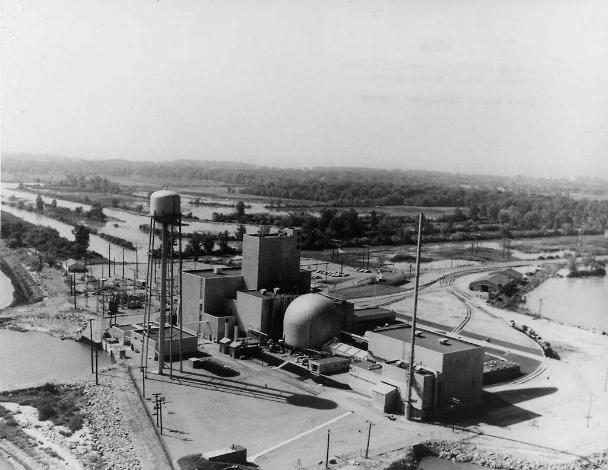
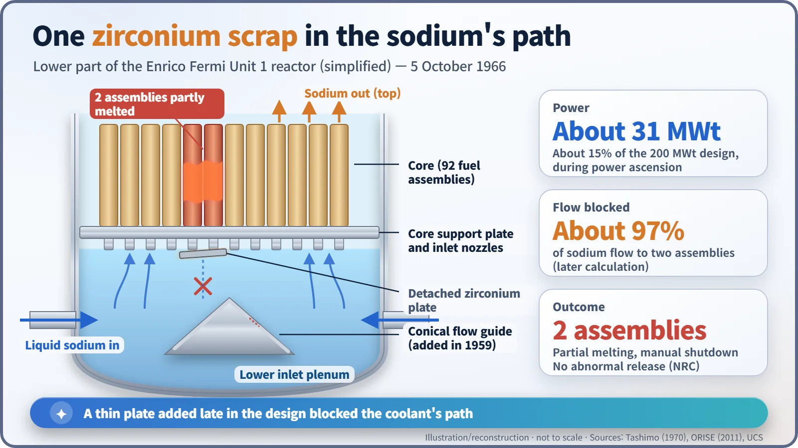
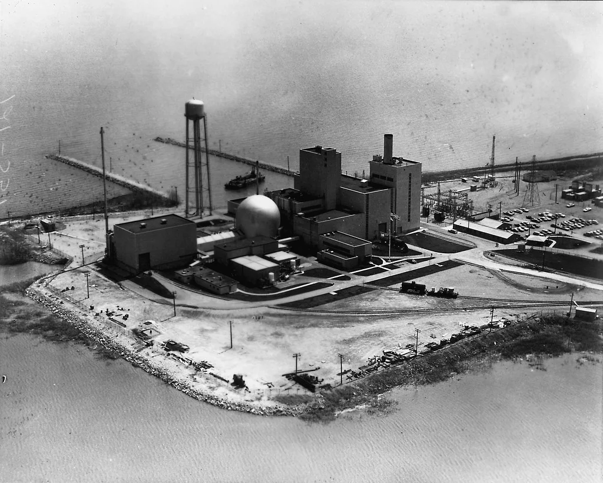
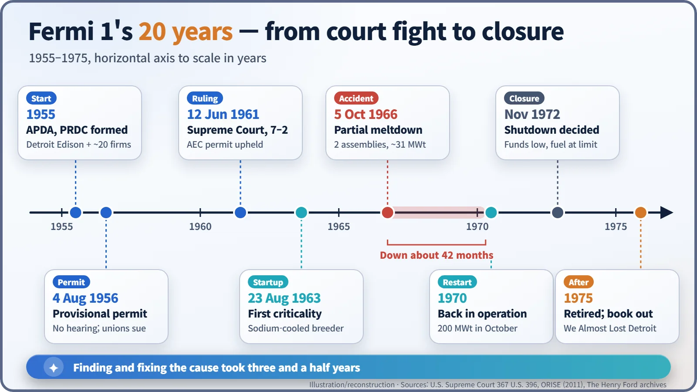

Nuclear History · 189
The Thin Plate That Blocked the Flow — Fermi 1's Partial Meltdown (1966)
A thin zirconium plate added for safety broke loose, choked off the sodium flow to two fuel assemblies and kept a pioneering breeder reactor shut for three and a half years.
On 5 October 1966, two fuel assemblies partially melted in the Enrico Fermi Unit 1 fast breeder reactor near Detroit. The cause was a thin zirconium plate, part of a safety feature added late in the design, that broke loose and blocked about 97% of the sodium coolant flow to them. No abnormal release reached the environment, but the repair took about three and a half years, and the episode later became famous through the book We Almost Lost Detroit.
A periscope in the sodium
In August 1967, at a power plant on the shore of Lake Erie in Michigan, engineers carefully lowered a long periscope-like device into the very bottom of a reactor. Down there everything was submerged in liquid sodium, a metal you cannot see through. After nearly ten months of searching, the lens finally picked out the culprit: a crumpled, thin sheet of zirconium. That one piece of metal kept the Enrico Fermi Atomic Power Plant, Unit 1, out of service for about three and a half years, and it eventually inspired one of the most famous book titles in nuclear history: We Almost Lost Detroit. [2] [5]

A dream born of a uranium scare
In the 1950s many planners worried that the world would soon run short of uranium. One answer was the fast breeder reactor. It uses fast neutrons to turn uranium-238, which barely burns in ordinary reactors, into plutonium that can be used as fuel. In other words, a breeder can make more fuel than it consumes. Because it must not slow its neutrons down, it cannot be cooled with water; it uses liquid sodium instead.
In 1955 about twenty power and industrial companies, led by the Detroit Edison Company, set up a research group, Atomic Power Development Associates (APDA), and a company to build and run the plant, the Power Reactor Development Company (PRDC). The driving force was Detroit Edison's Walker L. Cisler (1897–1994). The site was Lagoona Beach, about 35 miles (56 km) southwest of Detroit, and the plant was named after the physicist Enrico Fermi, who had died in 1954. It was a privately led demonstration plant designed for 200 megawatts of heat (MWt), or roughly 61 megawatts of electricity. [6]
To the Supreme Court before it was finished
The project was controversial from the start. On 4 August 1956 the Atomic Energy Commission (AEC) issued a provisional construction permit without a public hearing. Labour unions sued, arguing that the AEC had approved the plant without first deciding it would be safe. A federal appeals court set the permit aside, but on 12 June 1961 the U.S. Supreme Court reinstated it by 7 votes to 2, holding that the final finding on safe operation could wait until the operating licence stage. In dissent, Justice William O. Douglas, joined by Justice Hugo Black, wrote that the process had "no separate or independent standards for safety, no specific requirement for a finding on 'safety.'" [1]
The reactor first reached criticality (a self-sustaining chain reaction) on 23 August 1963. [5]
The afternoon of 5 October 1966
There had been warning signs. In June 1966 the outlet temperature of one fuel assembly (a bundle of fuel pins) read 20–25% higher than its neighbours. During a half-power test in August, some assemblies ran more than 40% hotter. The control rods also had to be withdrawn further than expected for the power level. The crew suspected faulty thermocouples and was moving assemblies around to check.
On 5 October the reactor was being brought up slowly in power. At about 31 MWt, roughly 15% of its design power, radiation monitors in the reactor building's exhaust ducts alarmed at about 3:09 p.m. The operators shut the reactor down by hand. Later inspection showed that two fuel assemblies had partially melted. [2] [3] [5]

The culprit was a safety device
At the bottom of the reactor vessel was an inlet chamber where sodium collected before flowing up through the core. In the middle of its floor stood a conical flow guide, added late in the design in 1959 as a protective feature in case the core ever melted. Thin zirconium plates were fastened to its surface. Part of that zirconium lining came loose, rode up on the sodium flow and lodged against the inlet nozzles of the fuel assemblies. Sources differ on whether one or two segments broke free.
Think of a plastic bag sucked against a bathtub drain. Later calculations and experiments indicated that the zirconium piece cut off about 97% of the sodium flow to the two damaged assemblies. With almost no coolant to carry the heat away, those two overheated and partly melted. A part added for safety had become the seed of an accident.
At the time, some news reports blamed a beer can left behind during construction. Examination of the recovered metal debris showed that neither alcohol nor sloppy housekeeping was the cause. [2] [5]
Three and a half years, and "We Almost Lost Detroit"
The recovery took far longer than the accident. Working blind through opaque sodium, the team did not pull the zirconium piece out until April 1968. The remaining zirconium plates were removed, and a malfunction detection analyzer, designed to flag small changes in reactivity, flow and inlet temperature, was added to the instrumentation. About 42 months after the accident, in 1970, the reactor ran again and reached 200 MWt that October. But money was running out and the core was nearing its burn-up limit, and in November 1972 PRDC decided to shut Fermi 1 down for good. [2] [3]
According to the U.S. Nuclear Regulatory Commission (NRC), no abnormal release of radioactivity to the environment occurred. Even so, in 1975 the writer John G. Fuller (1913–1990) published We Almost Lost Detroit, bringing to a wide audience the fears voiced at the time that melted fuel might have regrouped and led to a much worse accident. The following year Detroit Edison's Earl M. Page answered with We Did Not Almost Lose Detroit, arguing that power had been low and nothing had escaped. How close the plant really came to disaster is still judged differently depending on whom you ask. [3]

A small part, a lasting lesson
The lessons of Fermi 1 sound modest but carry weight: keep parts that could break loose out of the coolant's path, and do not shrug off small temperature anomalies. Looking back, the June and August readings had already been sending a warning, as the Union of Concerned Scientists and others note. Later fast reactors widely adopted inlet designs, such as nozzles with several side holes, that make it much harder for a single loose fragment to choke off an assembly's flow. On the same site today, a light-water reactor, Fermi 2, generates electricity, while Unit 1 is held in long-term safe storage awaiting final dismantling. [3] [5]
